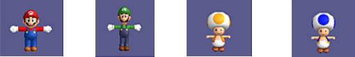

Personajes del videojuegos y poderes
Los cuatro personajes que puedes manejar en el juego, pueden tener diferentes aspectos y habilidades dependiendo del objeto que cojas. Los personajes que aparecen son Mario, Luigi, Toad Amarillo y Toad Azul.
-
Super
Super Mario - Super Luigi - Super Toad Amarillo - Super Toad Azul
Para convertirte en Super, tienes que coger un champiñón. Al hacerlo, tu personaje se hará de mayor tamaño. Si te golpean siendo Super, tu personaje volverá a ser de un tamaño más pequeño.

-
Fuego
Mario de Fuego - Luigi de Fuego - Toad Amarillo de Fuego - Toad Azul de Fuego
Cogiendo una flor de fuego tendrás la habilidad de lanzar bolas de fuego para poder eliminar enemigos o para derretir bloques de hielo. Para lanzar bolas de fuego, tienes que pulsar el botón "2" y si tienes conectado el Nunchuk, lo harás con el botón "B". Si te golpean teniendo esta habilidad, volverás a ser Super.

-
Gelido
Mario Gélido - Luigi Gélido - Toad Amarillo Gélido - Toad Azul Gélido
Esta habilidad la conseguirás tras coger una flor de hielo. Si disparas bolas de hielo a los enemigos, los dejarás convertidos en un bloque de hielo durante un tiempo. Para lanzar bolas de fuego, tienes que pulsar el botón "2" y si tienes conectado el Nunchuk, lo harás con el botón "B". Si te golpean teniendo esta habilidad, volverás a ser Super.

-
Helicoptero
Mario Helicóptero - Luigi Helicóptero - Toad Amarillo Helicóptero - Toad Azul Helicóptero
Hay un objeto llamado champicóptero y si lo coges, tu personaje obtendrá el traje de helicóptero, con el que podrás volar durante un tiempo. Para volar, tienes que agitar el mando de Wii y cuando llegues al punto más alto, planearás. Cuando estés planeando, puedes pulsar el mando hacia abajo para caer girando rápidamente. Si te golpean teniendo esta habilidad, volverás a ser Super.

-
Polar
Mario Polar - Luigi Polar - Toad Amarillo Polar - Toad Azul Polar
Esta habilidad se consigue cogiendo el traje polar. Con este traje tienes la habilidad de disparar bolas de hielo para congelar a los enemigos (pulsando el botón "2" o si tienes conectado el Nunchuk pulsando el botón "B"). También puedes deslizarte rápidamente por el hielo. Para ello, debes correr y cuando hayas cogido velocidad tienes que pulsar abajo en la cruz de control. Si te golpean teniendo esta habilidad, volverás a ser Super.

-
Mini
Mario Mini - Luigi Mini - Toad Amarillo Mini - Toad Azul Mini
Esta habilidad se consigue cogiendo una mini seta. Al cogerla, te convertirás en un personaje diminuto con el que podrás entrar por pequeñas tuberías. También tendrás la habilidad de poder caminar sobre el agua. Si te golpean teniendo esta habilidad, perderás la vida directamente.